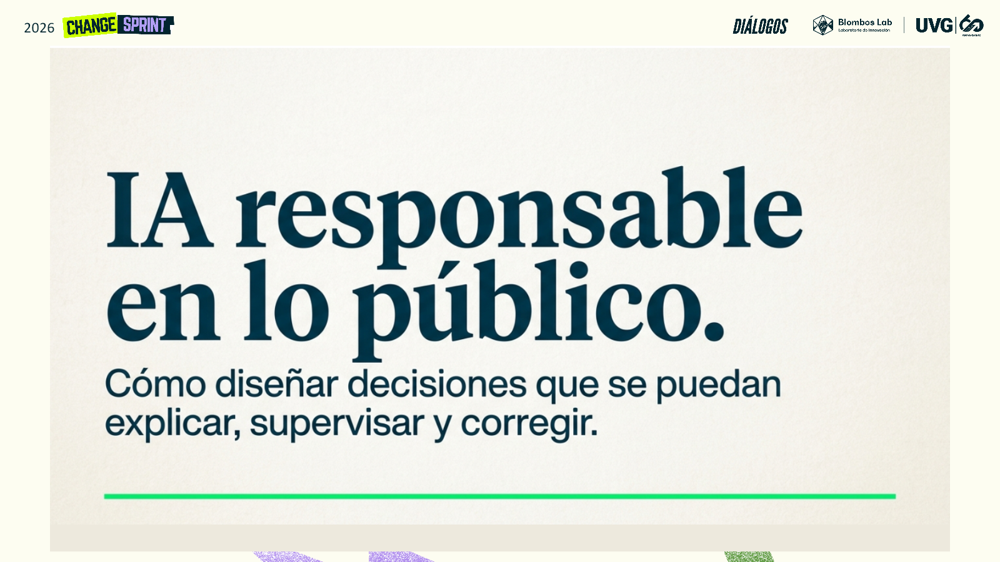
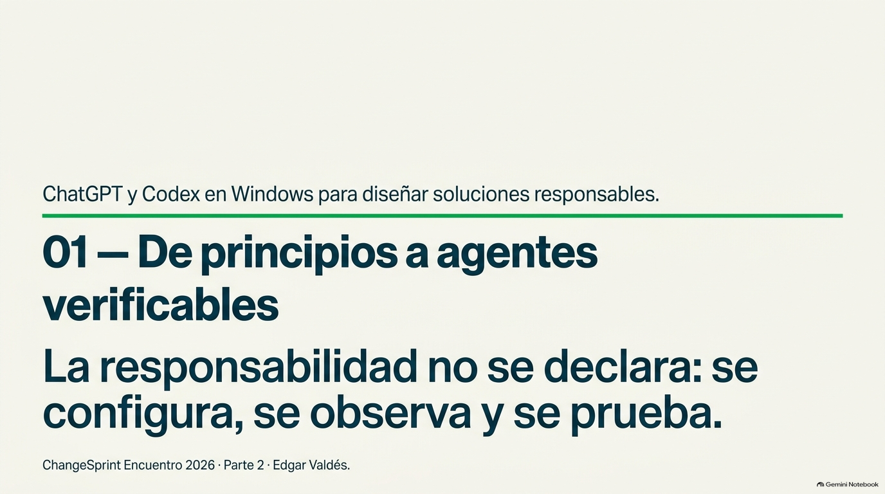

Տեղադրման ձեռնարկ
ChatGPT-ի պաշտոնական տեղադրում և Codex-ի հասանելիություն Windows-ում կամ macOS-ում, առաջարկվող թույլտվություններ և պատրաստվածության ստուգում։
Բացել PDF-ը (Իսպաներեն բնօրինակ)
Ուսուցման ուղի · Էդգար Վալդես · ChangeSprint 2026
Երկու փոխկապակցված հանդիպում․ նախ հասկանալ, թե ինչ է պահանջում պատասխանատու ԱԲ-ն, ապա այդ սկզբունքները վերածել կանոնների, թույլտվությունների, skills-ի և ստուգելի թեստերի։
Գվատեմալայի հովտի համալսարան · 60 րոպե
Էթիկական և պատասխանատու ԱԲ հանրային քաղաքականության ամբողջ փուլաշարում։ Տեսողական ներկայացում և համատեղ վարժություն՝ ազդակները, ապացույցները և մարդկային պատասխանատվությունը տարբերակելու համար։
Շապիկ + 16 սահիկ · Վերջնական տեսանյութ՝ 4 րոպե 21 վայրկյան, քսան հորինված օրինակով։
Ամբողջական ուղի · Ձայնային ներկայացումներ և աշխատարան
Առաջին հանդիպումը զարգացնում է դատողությունը։ Երկրորդը դա դարձնում է դիտարկելի վարքագիծ՝ սահմանված համատեքստ, մշտական հրահանգներ, մասնագիտացում, թույլտվություններ, ապացույց և ուղղում։
Տեսալսողական դադար · DW Español
Կարճ ներածություն ամբողջ ուղին միավորող հարցին․ ինչպես օգտվել արհեստական բանականությունից՝ չհրաժարվելով գաղտնիությունից, վերահսկողությունից և ընդհանուր շահից։
Հանդիպում 01 · Հայեցակարգային շրջանակ
Հիմունքներ, ռիսկեր, կառավարում, արդարություն, վերահսկողություն և Ազգային կրթաթոշակային հիմնադրամի երեք մարտահրավերների համատեքստը։

Հանդիպում 02 · Լաբորատորիա Codex-ում
Ծանոթացում Windows-ում ChatGPT-ին ու Codex-ին, AGENTS.md-ով և skills-ով կարգավորում, թույլտվությունների սահմաններ և լաբորատորիա՝ յուրաքանչյուր թիմին հինգ թեստով։

Նախապատրաստում և աշխատանքային տետրեր · PDF
Երեք փաստաթղթերը հետևում են նախապատրաստական առաջադրանքի նույն ձևաչափին և կազմում մեկ հերթականություն՝ պատրաստել համակարգիչը, պատրաստի փաթեթով սովորել գործելակերպը, ապա աշխատել սեփական նախագծի վրա։
ChatGPT-ի պաշտոնական տեղադրում և Codex-ի հասանելիություն Windows-ում կամ macOS-ում, առաջարկվող թույլտվություններ և պատրաստվածության ստուգում։
Բացել PDF-ը (Իսպաներեն բնօրինակ)Պատրաստված պանակ, դերեր, վեց քայլ, հինգ հորինված թեստ, ուղղում և վերջնական ցուցադրություն։
Բացել PDF-ը (Իսպաներեն բնօրինակ)Յուրաքանչյուր թիմի աշխատանքի աուդիտ, գործընթացի քարտեզ, պայմանագիր, նախատիպ, սեփական թեստեր և հասունության անդրադարձ։
Բացել PDF-ը (Իսպաներեն բնօրինակ)Նախապատրաստական առաջադրանք · PDF փաստաթուղթ
Բացահայտեք խնդիրը, ԱԲ-ի հնարավոր կիրառությունը, հիմնական ռիսկը, ավտոմատացման սահմանը, անհրաժեշտ երաշխիքը և թիմի ուսումնասիրելիք հարցը։
Վարժություն 01 · Ուղղորդված փորձ
Յուրաքանչյուր թիմ ստանում է խնդիր, կանոններ, համատեքստ, հինգ հորինված դեպք և հանձնվող նյութերի ձևաչափեր։ Այստեղ սովորում ենք կարգավորել, գործարկել, խափանել, ուղղել և կրկին փորձարկել։
Կիրառել սանդղակը, մեջբերել ապացույցը և փոխանցել վերանայման․ երբեք չորոշել աջակցություն տրամադրելը։
Ներբեռնել փաթեթը (Իսպաներեն բնօրինակ)Գտնել բացակայող նյութերը և ուղղորդել հաջորդ քայլը․ երբեք չմերժել ավտոմատ։
Ներբեռնել փաթեթը (Իսպաներեն բնօրինակ)Վերանայել նպատակը, տվյալները, թույլտվությունները, հետագծելիությունը, բացատրությունը, բողոքարկումը և կանգառի պայմանները։
Ներբեռնել փաթեթը (Իսպաներեն բնօրինակ)Վարժություն 02 · Առանց օժանդակ անիվների
Այժմ յուրաքանչյուր թիմ իր նախորդ աշխատանքով տարանջատում է փաստերն ու վարկածները, վերակառուցում գործընթացը, ընտրում մեկ առաջադրանք և կարգավորում ստուգելի նախատիպ՝ սեփական նախագծած դեպքերով։